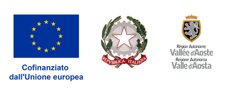

Fondo europeo agricolo per lo sviluppo rurale: l’Europa investe nelle zone rurali
Fonds européen agricole pour le développement rural: l’Europe investit dans les zones rurales
Intervento SRD15 “Investimenti produttivi forestali”
Opération SRD15 - “Soutien aux investissements dans la production forestière”
Iniziativa finanziata dal Complemento di sviluppo rurale Regione Valle d’Aosta 2023/2027
Initiative financée par le Complément de développement rural de la Vallée d’Aoste 2023/2027
Organismo responsabile dell’informazione/Sujet responsable de l’information:
Luigi Navoni